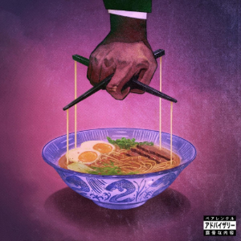

A popular style of wafu pasta (Japanese-style Italian fusion) that incorporates Japanese ingredients into a creamy sauce. The most common variations feature mentaiko (spicy cod roe) or utilize ingredients like soy sauce and miso paste for an umami flavor profile.